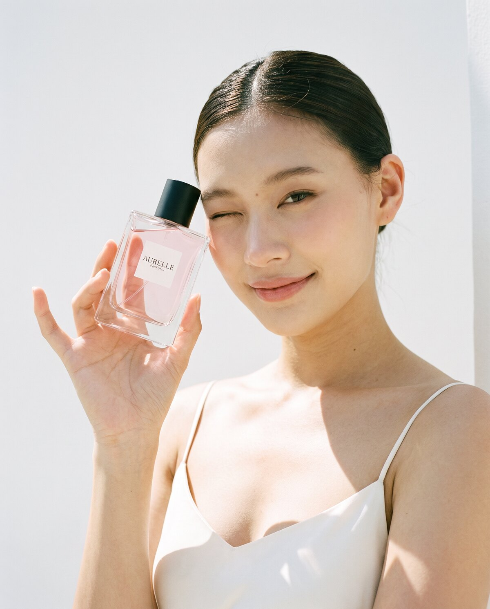
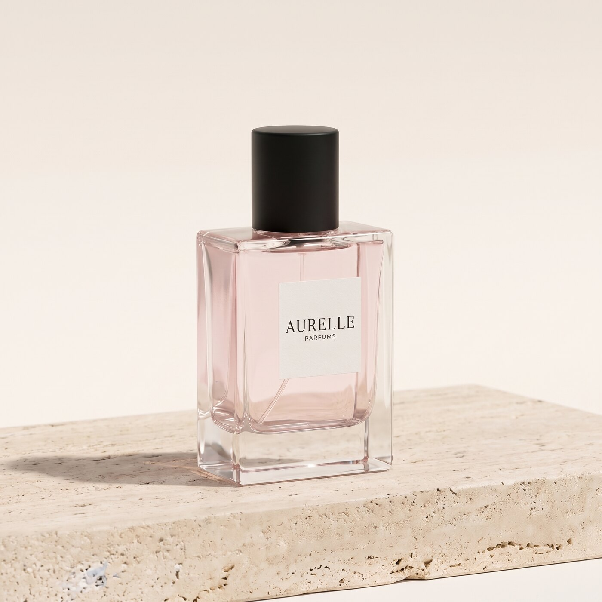

O nas
Kdo smo
AURELLE je slovenska znamka dišav, ki jo je ustanovila [Ime ustanoviteljice].
[Ime ustanoviteljice] je želela dišave, ki so lepe, kakovostne in poštene do cene: take, ki jih po nakupu ne odložiš v predal, ampak jih nosiš vsak dan.
[Dopolni: osebna zgodba ustanoviteljice in razlog, zakaj je začela AURELLE.]


Kako nastajajo naše dišave
Dišave nastajajo v majhnih serijah in so izdelane v Sloveniji. Vsaka vsebuje 18 % dišavnih olj, zato je Eau de Parfum in na koži zdrži ves dan, a nikoli ni vsiljiva.
Vsako dišavo zgradimo iz treh stopenj: vrha, ki se odpre prvi, srca, ki določa značaj, in baze, ki ostane na koži še dolgo po nanosu.
[Dopolni: kdo meša dišave, kje nastajajo, kako dolgo zorijo.]
Naša obljuba
Kakovost
18 % dišavnih olj v vsaki steklenici in izdelava v Sloveniji.
Poštena cena
Ena dišava, tri velikosti in jasne cene. Cena na 100 ml je vedno prikazana.
Vzorec ob vsakem naročilu
Ob vsakem naročilu priložimo vzorec 2 ml, da lahko najprej preizkusiš in šele nato odpreš veliko steklenico.